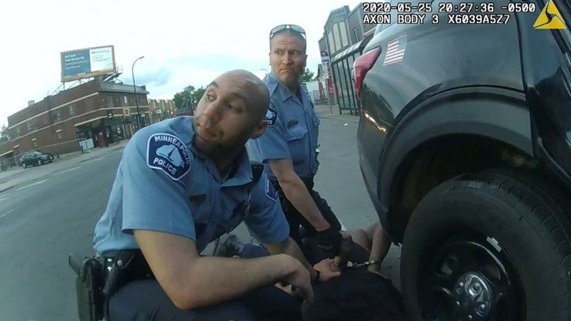

US & Canada
George Floyd death: How will jurors be selected in Derek Chauvin trial?
It was video footage seen across the world - Derek Chauvin with his knee pressed on the neck of George Floyd for about nine minutes before he died.
Now the former US police officer faces trial on second-degree murder and second-degree manslaughter charges.
Three other dismissed officers will stand trial together later this year, but proceedings in Mr Chauvin's trial will start on Monday, when jury selection begins.
How will the jury be picked?
A pool of eligible local citizens has been called to appear by Hennepin County in Minnesota. From them, a jury of 12 and four alternates will be selected. It could take weeks.
Although it is highly unlikely potential jurors will have no prior knowledge of the case - George Floyd's death in May last year in Minneapolis inspired weeks of global protests - they will be questioned to determine whether they will be able to judge Derek Chauvin fairly.
The prosecution and defence can both ask Judge Peter Cahill to dismiss a potential juror "for cause" if they perceive bias. The prosecution can also dismiss nine potential jurors - and the defence team 15 - without giving any reason, although this can be objected to.
Once 16 people have been approved, the jury can be seated. The trial itself will not begin until 29 March.
Each potential juror has already been asked to fill in a 16-page questionnaire about the case.
What's in the questionnaire?
The main thrust is to determine familiarity with the case and issues such as a potential juror's own interactions with law enforcement.
When that total was reached, further cases were simply left off.
For a bit of context, Excel's XLS file format dates back to 1987. It was superseded by XLSX in 2007. Had this been used, it would have handled 16 times the number of cases.
Key questions include:
How potential jurors respond can lead to either defence or prosecution dismissing them.
Prof Valerie Hans, a jury researcher based at Cornell Law School, says the questionnaire is more detailed and personal than most pre-trial documents, and asks about their "deepest attitudes on some of the most important political and social topics of the day".
Prof Hans says the aim for the two teams is to get "a sense of whether or not a prospective juror will be open to the kinds of arguments that they intend to make over the course of the trial".
The selection process is different from the UK. Jury trials there are less common, and jurors - picked at random - don't know which trial they will serve on until they've been sworn in. Jurors can only be dismissed by a judge in very specific circumstances.
Why is jury selection so crucial?
In cases involving issues such as racism, the selection process can be seen as hugely important to the outcome of the trial and how fair it is perceived. A lack of diversity could lead to questions about the legitimacy of the verdict.
The jury pool in Hennepin County was 80% white and 8% black in the financial year to September 2020, the New York Times reported, a bigger gap than for Minneapolis as a whole (64% to 19%).
The vetting system does try to ensure that a cross-section of society is represented, but at the same time, both defence and prosecution will be looking for jurors that will bring them a favourable outcome.
In high-stakes trials, they often use special consultants who look at factors such as the jurors' backgrounds and even their body language.
Prof Hans says the judge will need to keep a close eye on patterns emerging among dismissals of potential jurors by the prosecution or defence, as this cannot be done on race grounds.
In general terms, legal experts say white jurors are less likely to convict law enforcement officials, although it is in unclear how much of this has changed following the worldwide reaction to the Floyd case.
The chosen jurors will be partially sequestered, or isolated, during the trial and fully sequestered once deliberation starts. They will also remain anonymous until the judge allows their identities to be made public.
It's not uncommon for US jurors to speak out about their deliberations afterwards, and in some infamous examples, like the OJ Simpson trial, some have even gone on to write books about their experiences.
What will be key to reaching a verdict?
The high-profile video of George Floyd's death brought an outpouring of anger in the US and beyond, but securing a legal conviction is another matter.
AThe first issue is the charges. To convict of second-degree murder, jurors must find that Mr Chauvin had committed, or was trying to commit, a felony that caused the death.
Second-degree manslaughter would mean Mr Chauvin had consciously taken the chance of causing death or injury through his negligent actions.
The defence will point to Floyd's health issues or drug consumption as a likely cause of death - although the judge has already written that the prosecution only has to prove Mr Chauvin's actions were a "substantial causal factor".
The defence will also argue Mr Chauvin was authorised to use force in his role as a police officer, in an attempt to undermine the accusation that he was trying to commit a felony.
The prosecution will rely on the strong video evidence, pointing to the length of time Floyd's neck was pressed as passers-by pleaded for him, and alleging that the officer broke police department policy.
It will also submit evidence of Mr Chauvin's actions in separate cases. This will include an instance where the officer restrained a female by placing his knee on her neck.